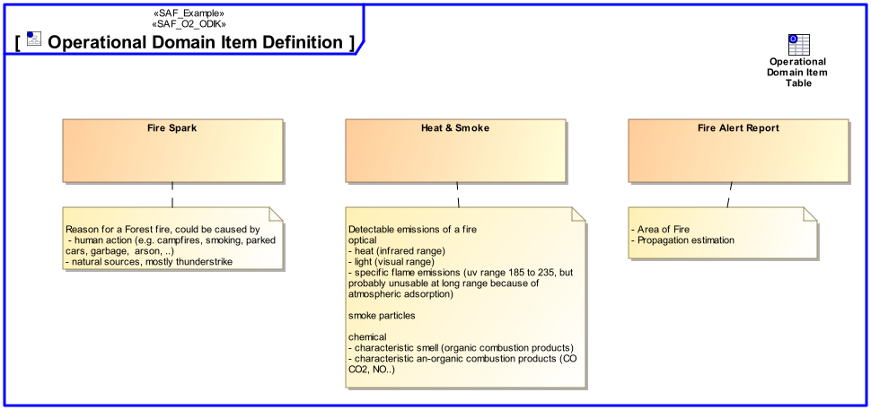
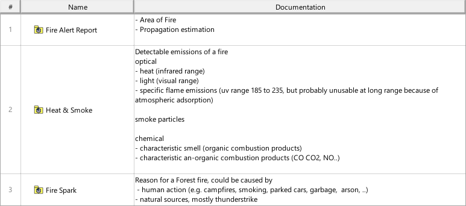

O2_ODIK Operational Domain Item Kind Viewpoint
| Domain | Aspect | Maturity |
|---|---|---|
| Operational | Taxonomy & Structure |


The Operational Domain Item Kind Viewpoint captures enterprise wide concepts and collects type definitions for any exchanged item of the Operational Domain. Its purpose is to define these item types and their relationships.
The Operational Domain Item Kind Viewpoint supports the “Business or Mission Analysis Process” activities of the INCOSE SYSTEMS ENGINEERING HANDBOOK 2015 [§ 4.1] and contributes to the problem or opportunity statement.
A block definition diagram (BDD) featuring Operational Domain Item Kinds and their relationships.
A Table featuring Operational Domain Item Kinds, their relationships and their Documentation
The following Stereotypes / Model Elements are used in the Viewpoint: